here are two sets of images I took with projective transforms between them:
set one: BWW
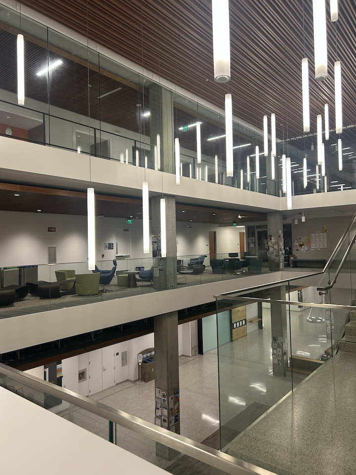
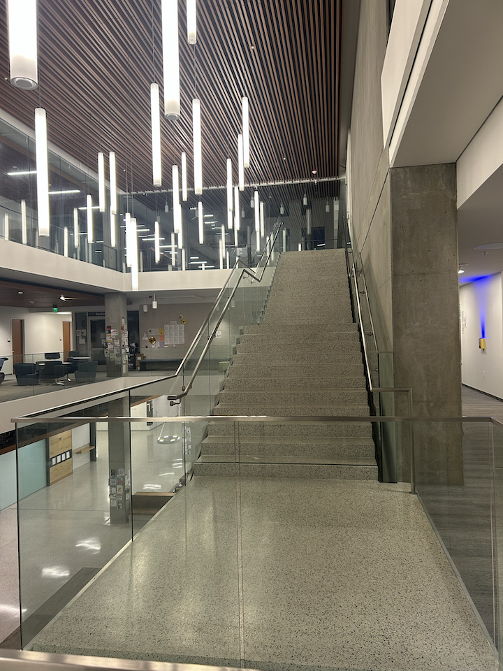
set two: vlsb circulation desk
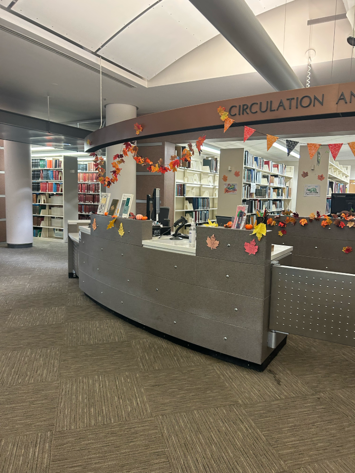
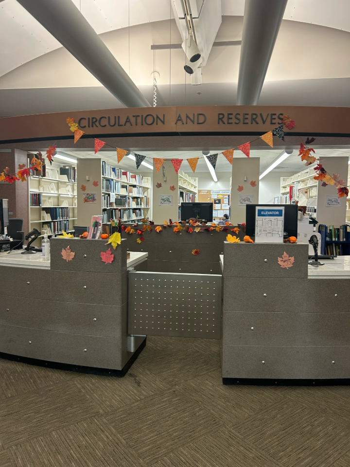
briefly on how i implemented compute H:
i implemented
computeH(im1_pts, im2_pts) to solve for H, using 6
corresponding pairs of points. H has 8 degrees of freedom so this
means solving for 12, which leads to an overtdetermined system, so i
just used the least norm solution. to choose the points, i manually
chose them via imageonline.io.
As for the actual math, you are trying to solve the equation
Ah = 0. Given an (x, y) point, we get some
correspondence like so:
[-x1 -y1 -1 0 0 0 x2x1 x2y1 x2]
[ 0 0 0 -x1 -y1 -1 y2x1 y2y1 y2]
this ends up being 2 rows of A. so we need to vertically stack this
with 4 points (hence earlier with 6 points it's overdetermined, but we
need 4 points to solve), to get a solvable matrix.
h itself only has 8 free entries, as h₃₃ is
set to 1. we reformat like so to get the homography matrix:
[[h11 h12 h13],
[h21 h22 h23],
[h31 h32 1]]
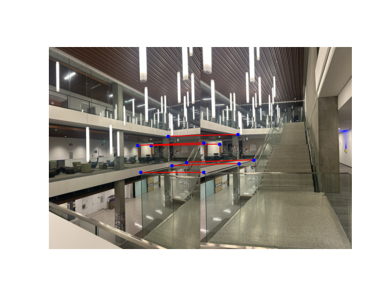
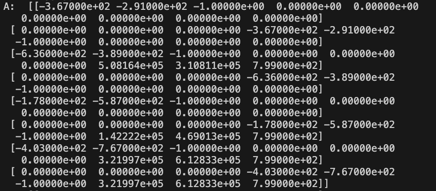
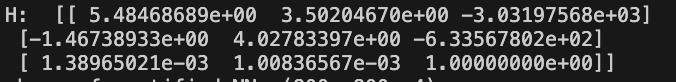
here is my inverse warping + rectification on the post-it and book. for the book i chose a rough ratio of W:L = 3:4 and it seems to have represented it quite well. between the two methods i don't visually see too much of a difference. and in the post-it note, it entirely cropped out all borders, which i thought was interesting, and it is truly just a square with the hue of the post-it note. though i would expect bilinear to be more true to the actual image (color-wise) because it has more information and more layers of interpolation.
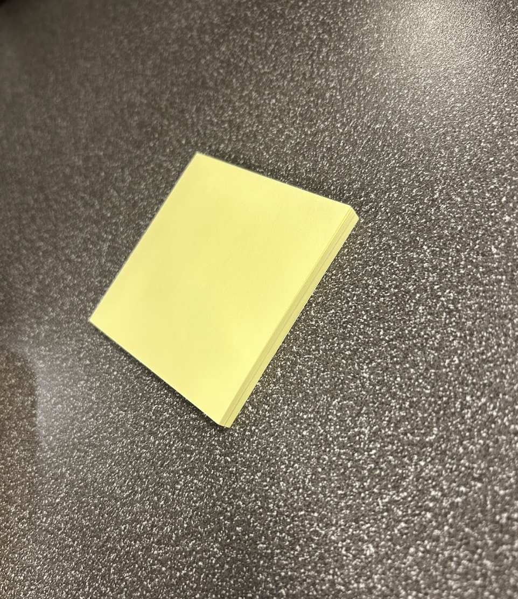
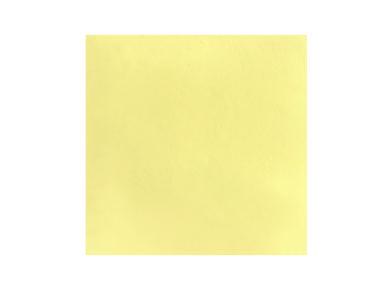
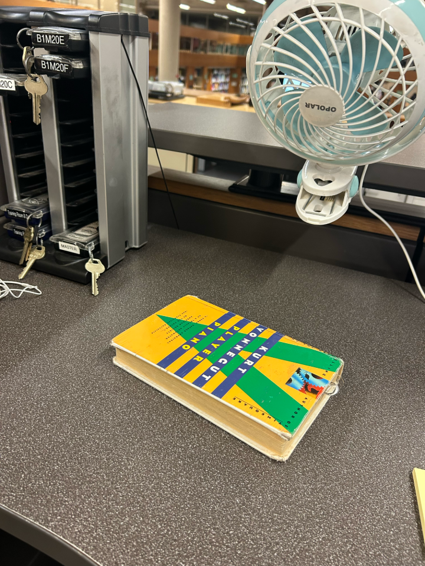
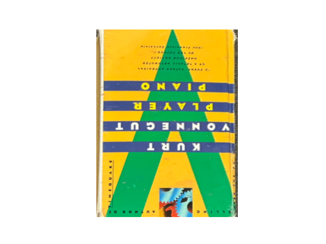
to stitch the images into a mosaic, i wrote three main functions:
compute_bounds, mosaic, and
mosaic2. the goal here was to take two overlapping
images, use the recovered homography to warp them into the same
coordinate frame, and then combine them into a single panorama.
compute_bounds first finds where the second image’s
corners end up after being warped by the homography. it combines those
with the corners of the first image to figure out the full area that
both images will cover. from that, i calculate the minimum and maximum
x and y values, which tell me how big the
final canvas should be and how much translation i need to apply so
everything fits in positive coordinates.
in mosaic, i build a translation matrix
T using that offset, and then warp both images into the
new mosaic frame using warpBilinear. the first image is
warped by T, and the second image is warped by
T @ H₂→₁. both warps rely on the bilinear interpolation
function i wrote earlier (in part a.3)
to actually combine the two warped images, i make simple binary masks to mark where each image has valid pixels. then, i copy over all pixels from the first image, and wherever the second image also has data, i overwrite those regions with its pixels.
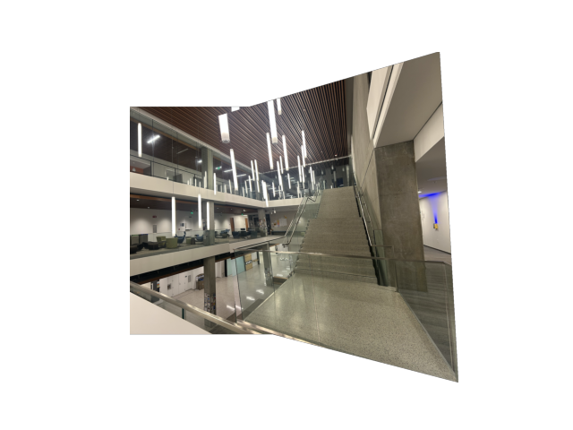
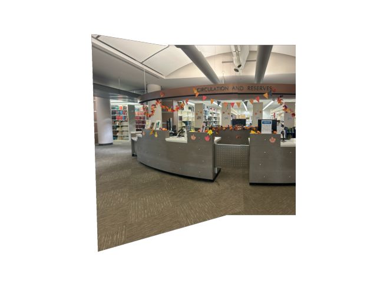
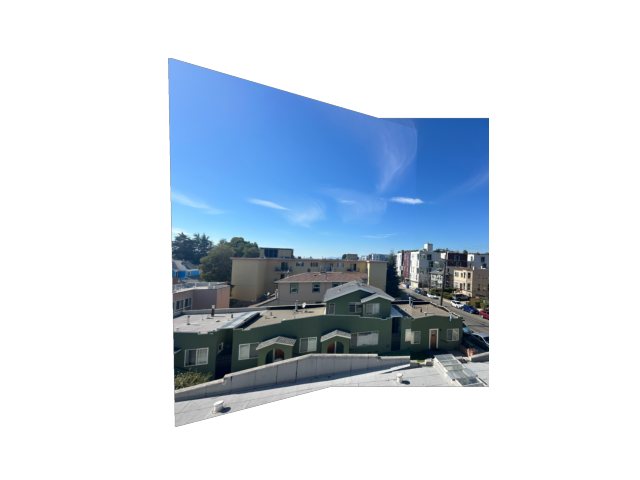
here is a picture of BWW overlaid with harris corners, and then anms corners.
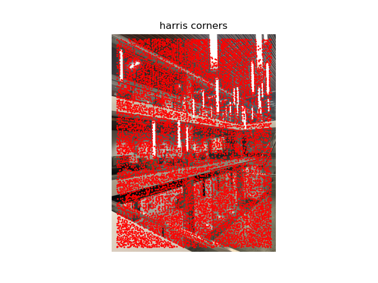
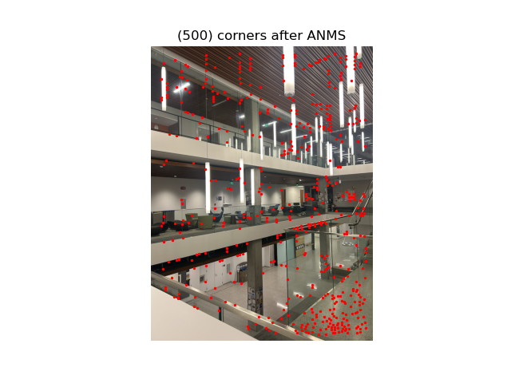
here are some feature descriptors. to implement this, i took 40×40 windows located at the previously calculated anms corners (contained completely within the image). then, i downsampled each one till it was an 8×8 patch, and normalized it to have std = 0, mean = 1. then to visualize, i normalized it within the range of [0, 1].
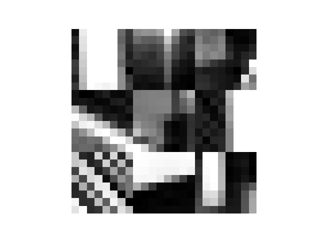
using a Lowe threshold of 0.7, here are the matched features between a pair of BWW images:
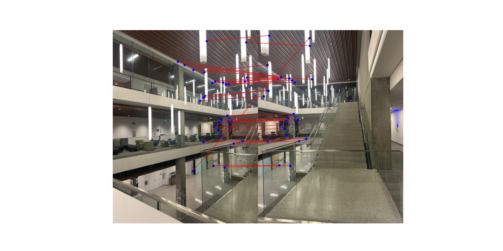
i implemented a 4-pt RANSAC method. here are 3 mosaics side-by-side using the manual (part A) vs automatic (part B) stitching methods:
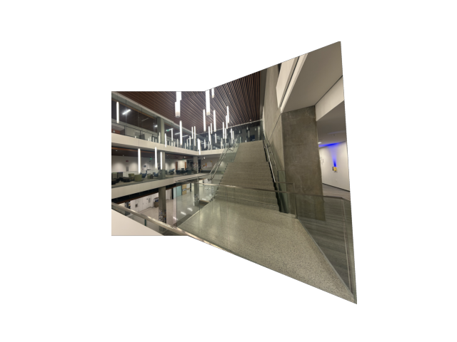
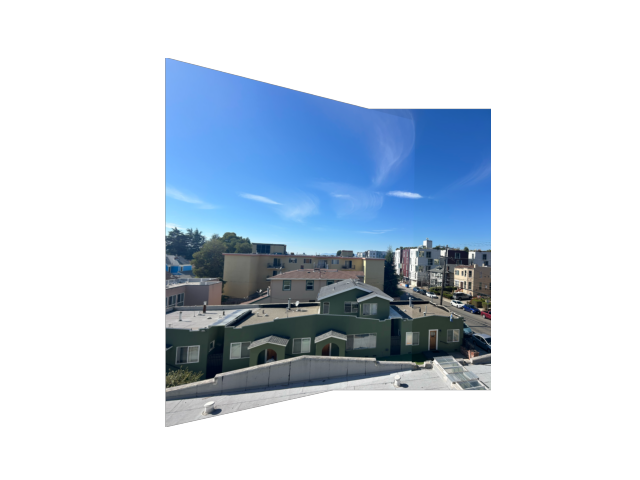
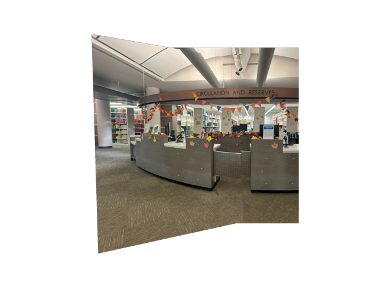